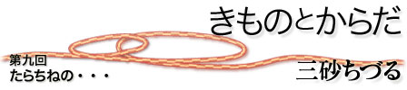

|  |
| 前回に、「胸」と着物の話をしたのだが、今回もう一度胸の話を続けたいと思う。しかし、今回は「おっぱい」の話にしようと思う。「胸」と「おっぱい」はちがう。「おっぱい」は赤ちゃんあっての、話である。つまり今回は授乳するおっぱいの話である。 助産院などにでかけてみると、よく、おっぱいをあげるための授乳服、とか授乳用Tシャツといったものが売られている。公衆の面前でおっぱいをぺろん、と出すことがためらわれるから、なるべくおっぱいをむき出しにしなくてもすむように、いろいろな工夫がこらされていてなかなかすてきなシャツも多い。母親がなんのためらいもなく、乳房を出して公衆の面前で授乳していた時代は、そんなに昔ではないのだが、今ではやはり女性はいろいろに気を使わなければならなくなっている。 身八つ口というのは、きもののわきに開いているところで、肌襦袢も、長じゅばんも開いている。つまり、着物を着ていると、わきはすかすかとあいている。授乳するためにはおっぱいを外に出さなければならず、かといって襟元をはだけさせると後が大変である。きものを着ているころ、母親は授乳のために、おっぱいを身八つ口から出していたそうである。女性はぜひ一度、試してみていただきたいが、「身八つ口からおっぱいを出す」というのはそんなに簡単なことではない。授乳もしていない、貧弱な乳房は身八つ口から「引っ張り出す」ほどの分量もないので、なかなか難しい。分量がないことが難しさのひとつだが、もうひとつ、おっぱいを「引っ張り出そう」とすると、おっぱいの基底部という、おっぱいの付け根の部分はあまり自由に動かない、ということに気づく。 やや、話がおっぱいにかかわる専門用語に偏ってきたので説明をしておきたい。おっぱいマッサージをやっておられる助産婦さんなら誰でも知っておられることだが、おっぱいと胸板がくっついているあたりの部分を「基底部」という。つまりおっぱいがプリンのようにお皿にのっているとすると、ちょうどお皿にあたっている部分、つまりおっぱいの底の部分を基底部、というのである。ここは、もともとよく動かなければならないそうだ。授乳するときに、この基底部が固まっている人はおっぱい全体ががちがちになって、お乳がなかなか出ないので、助産婦さんが手を添え、あるいは、女性が自分でおっぱいに手を当てて、基底部をすこしずつずらし、おっぱいが胸板の上をするする自由に動く感じにしておくことが大切らしい。じっさいブラジャーで、がちっと固めていると、やはり基底部の動きは悪くなってしまうのだという。 きものを着て、身八つ口からおっぱいを引っ張り出して赤ちゃんにお乳をあげるためには、おっぱいの基底部はゆるゆるといつもよく動く状態になっていた、ということだと思う。人間は哺乳類なので、子どもを産み、授乳が始まると、おっぱいはものすごい大きさになる。ふだんはぜったい引っ張り出すことが不可能だったおっぱいも、かなり大きくなるし、そこで基底部が自由に動いていれば、比較的かんたんに身八つ口から引っ張り出すことができただろう。アフリカのお母さんたちは、腰巻の布で、赤ちゃんを体の脇にぴったりとくっつけて抱いているが、赤ちゃんはちょっと大きくなってくると、自分でおかあさんのおっぱいを引き寄せて、飲んでいるそうである。「基底部」という部分はそもそもよく動く状態がよい、ということなのである。 基底部がよく動く、可動性の高いおっぱいは、授乳期がおわると、その張りがなくなるから、自然と下にたれてくる。「たらちねの」は母の枕詞であるが、「垂乳根」は、よく基底部の動くおっぱいが、その張りを失った後、根元からたらん、とたれてくる状態なのだろう。ブラジャーのような締め付ける下着をつかわないきものでは、たれてきたおっぱいは帯の上にのっていたわけである。先日、立山の女人信仰について調べさせてもらう機会があった。おんばさま、とよばれる老女の66体におよぶ像があったのだという。明治の廃仏毀釈により、今は博物館に10体ほど残っているだけである。おんばさまの像では、うきだしたあばら骨の下部に、たらん、とたれさがった乳房がうかがえる。それを見ると、このおんばさまたちは、みな、母親なのだな、と想像することができる。「たらちね」が母をあらわしていた、ということは、基底部のよく動くおっぱいを存分に使い、その後垂れるがままにしていた、ということだろう。 授乳して、おっぱいがたれるのがいやだ、という声もよく耳にする。授乳後は、ひきあげるブラジャーで形を整えなければならないと思われている。ふわふわして、胸の上をゆるゆる動いていたおっぱいが、自然にたらん、とたれてくることは、きものを着ていたらそんなにいやなことでもないように思うが、いかがなものだろうか。裸が美しくなくなるから、やっぱり受け入れがたいのだろうか。おんばさまの像はなかなか素敵に見えたのだけれども・・・。 三砂ちづる（みさご・ちづる） 疫学者 |